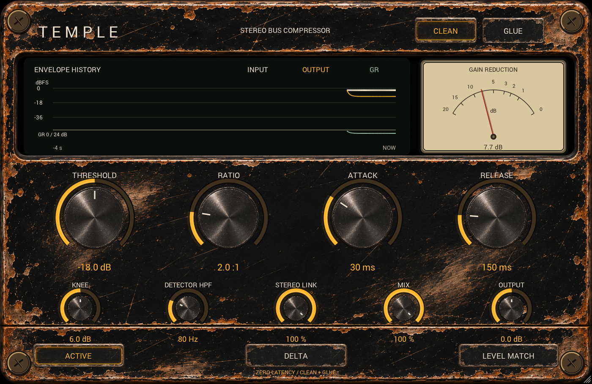

Direct control.
A feed-forward peak detector with a soft knee. Set Threshold, Ratio, Attack and Release for the movement your material needs.
INDEPENDENT AUDIO SOFTWARE
A stereo compressor for cohesion and gentle dynamic control. Master and buses first, then drums. Two responses, a focused signal path and a clear view of what the compression is doing.
v0.2.2 candidate · Windows x64 · CLAP · ZIP, 7.70 MiB

CONTROL THE DYNAMICS
A feed-forward peak detector with a soft knee. Set Threshold, Ratio, Attack and Release for the movement your material needs.
A 10 ms RMS detector and two release stages give this response its own recovery shape. Neither mode intentionally adds saturation or emulates an analog circuit.
Filter low frequencies only in the detector, from 20–250 Hz. Stereo Link ranges from independent channels to fully shared gain reduction.
WATCH THE MOVEMENT
Four seconds of measured input and output peaks sit beside an analog-style GR meter. Its nonlinear 0–20 dB scale shows the strongest channel after Stereo Link, before Mix, Output and Level Match. Needle smoothing is visual only.
HEAR WHAT CHANGES
Hold Delta to hear dry minus compressed before Mix, Output and Level Match. Release it to return. The audition is momentary and is never saved or automated.
ALONGSIDE BRASA
Temple controls dynamics; Brasa brings colour and harmonics. Try corrective EQ, Temple, Brasa, then a limiter, and adapt the order to your material.
TEMPLE 0.2.2 CANDIDATE
Download and extract the ZIP, then run the installer with REAPER or your audio host closed. Interface and documentation are in English.
Download Windows candidate